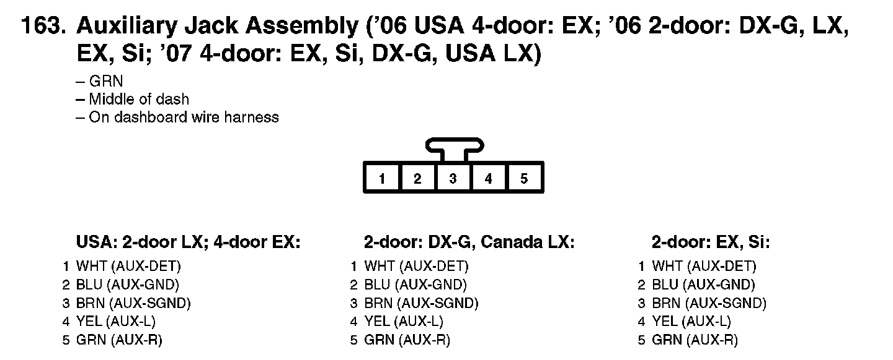

Operation CHARM
: Car repair manuals for everyone.
Home
>>
Honda
>>
2007
>>
Civic Si L4-2.0L
>>
Repair and Diagnosis
>>
Diagrams
>>
Connector Views
>>
Connector Views By View Number
>>
View 151-175
>>
163
View 151-175: 163
163. Auxiliary Jack Assembly ('06 USA 4-door: EX; '06 2-door: DX-G, LX, EX, Si; '07 4-door: EX, Si, DX-G, USA LX):
